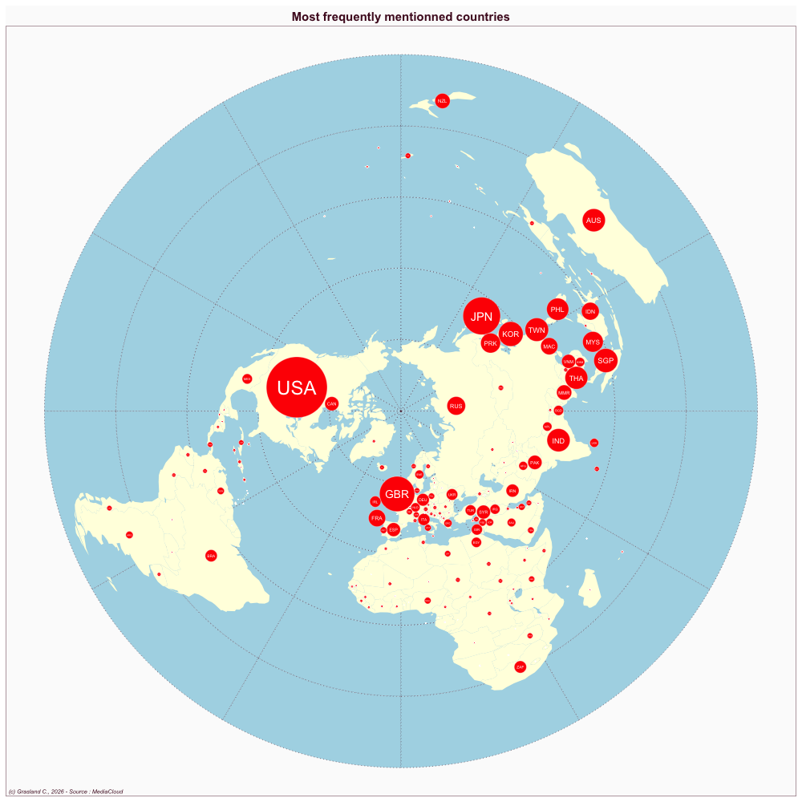

China - Hong Kong
- Website : SCMP
Scale
- Global
- National
Topics
- General news
- Political news
- Economic news
Publications
Wu S. 2023. Evaluating “exemplary data journalism” from asia: An exploration into south china morning post’s data stories on china and the world. Journalism 24: 2042–2058